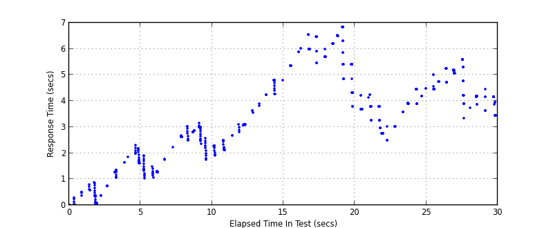
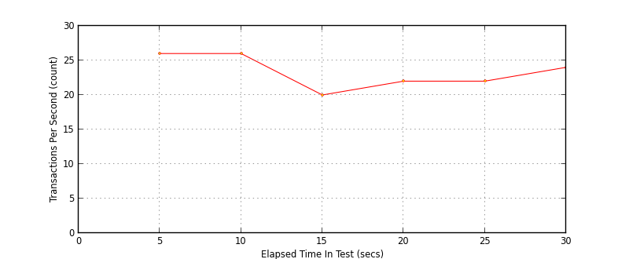
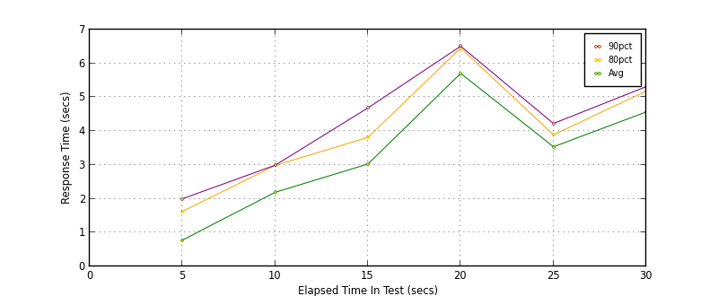

Performance Results Report
Summary
transactions: 813
errors: 0
run time: 30 secs
rampup: 10 secs
test start: 2014-01-07 16:26:57
test finish: 2014-01-07 16:27:26
time-series interval: 5 secs
workload configuration:
| group name | threads | script name |
|---|
| user_group-1 | 100 | read_user.py |
All Transactions
Transaction Response Summary (secs)
| count | min | avg | 80pct | 90pct | 95pct | max | stdev |
|---|
| 813 | 0.005 | 3.235 | 4.792 | 5.595 | 5.989 | 6.836 | 1.757 |
Interval Details (secs)
| interval | count | rate | min | avg | 80pct | 90pct | 95pct | max | stdev |
|---|
| 1 | 130 | 26.00 | 0.005 | 0.780 | 1.626 | 2.000 | 2.177 | 2.301 | 0.728 |
| 2 | 130 | 26.00 | 1.028 | 2.191 | 2.985 | 2.992 | 3.018 | 3.151 | 0.730 |
| 3 | 103 | 20.60 | 1.922 | 3.027 | 3.813 | 4.685 | 4.790 | 4.801 | 0.884 |
| 4 | 112 | 22.40 | 3.789 | 5.706 | 6.456 | 6.510 | 6.835 | 6.836 | 0.722 |
| 5 | 114 | 22.80 | 2.486 | 3.536 | 3.891 | 4.224 | 4.459 | 4.481 | 0.536 |
| 6 | 124 | 24.80 | 3.339 | 4.566 | 5.183 | 5.314 | 5.593 | 5.596 | 0.616 |
Graphs
Response Time: 5 sec time-series
Response Time: raw data (all points)

Throughput: 5 sec time-series

Custom Timer: get_tweets
Timer Summary (secs)
| count | min | avg | 80pct | 90pct | 95pct | max | stdev |
|---|
| 713 | 0.005 | 3.235 | 4.792 | 5.595 | 5.989 | 6.836 | 1.757 |
Interval Details (secs)
| interval | count | rate | min | avg | 80pct | 90pct | 95pct | max | stdev |
|---|
| 1 | 130 | 26.00 | 0.005 | 0.779 | 1.626 | 2.000 | 2.177 | 2.301 | 0.728 |
| 2 | 130 | 26.00 | 1.027 | 2.191 | 2.985 | 2.992 | 3.018 | 3.150 | 0.730 |
| 3 | 103 | 20.60 | 1.922 | 3.027 | 3.813 | 4.685 | 4.790 | 4.801 | 0.884 |
| 4 | 112 | 22.40 | 3.789 | 5.705 | 6.456 | 6.510 | 6.835 | 6.836 | 0.722 |
| 5 | 114 | 22.80 | 2.486 | 3.536 | 3.891 | 4.224 | 4.459 | 4.480 | 0.536 |
| 6 | 124 | 24.80 | 3.339 | 4.566 | 5.183 | 5.314 | 5.593 | 5.596 | 0.616 |
Graphs
Response Time: 5 sec time-series

Response Time: raw data (all points)
Throughput: 5 sec time-series